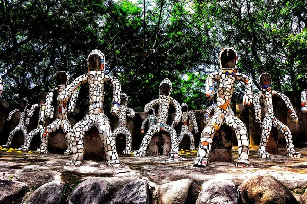
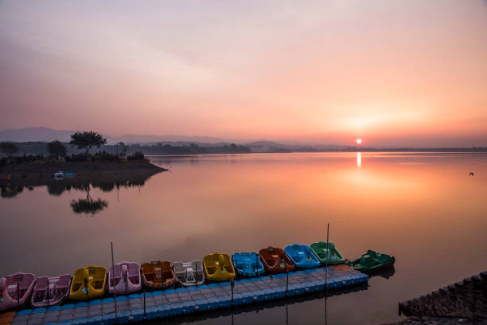
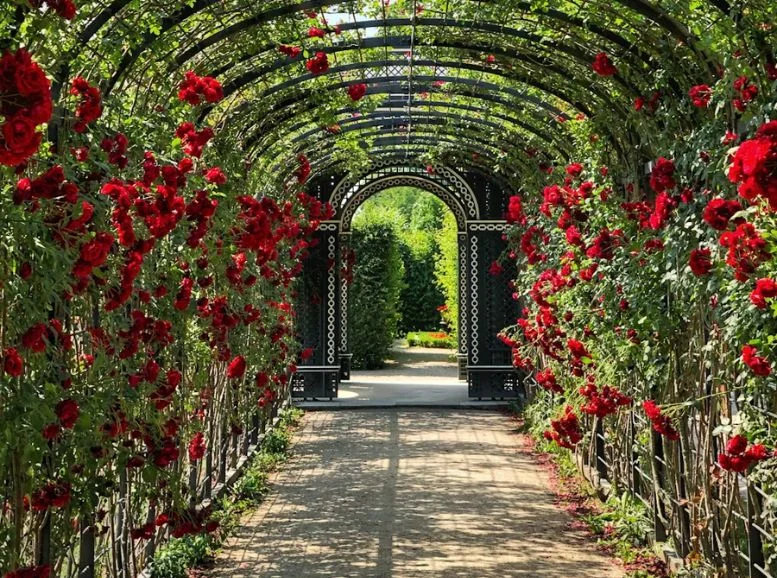
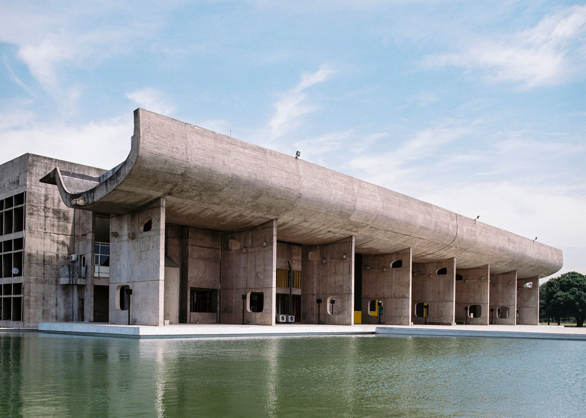
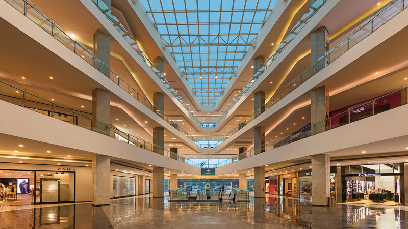
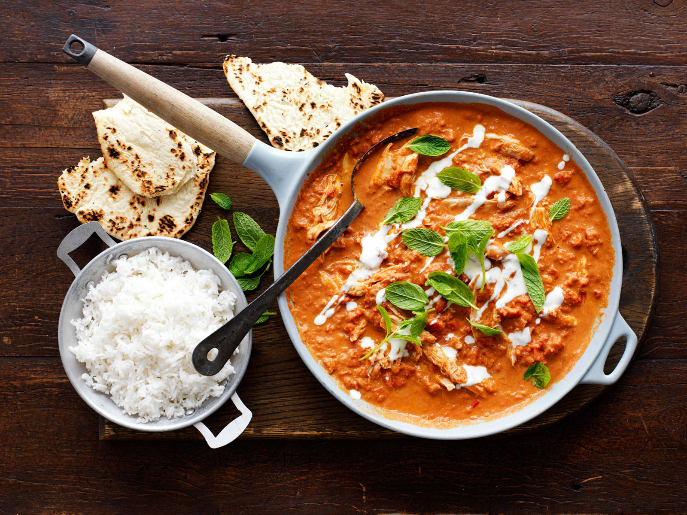

About Chandigarh
Chandigarh is a city and union territory in India that serves as the capital of the northern states of Punjab and Haryana. It is known for its modern architecture, urban design, and beautiful gardens.
Key Attractions
- Rock Garden 
- Sukhna Lake 
- Rose Garden 
- Capitol Complex 
- Elante Mall 
Getting Around
Chandigarh has a well-planned public transport system including buses and auto-rickshaws. The city is also bicycle-friendly with dedicated cycling tracks.
Local Cuisine
Chandigarh offers a variety of local Punjabi cuisine. Don't miss trying dishes like Butter Chicken, Sarson da Saag with Makki di Roti, and Chole Bhature.
- Butter Chicken 
- Saag with Makki di Roti

- Chole Bhature